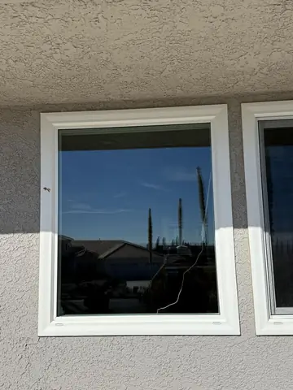
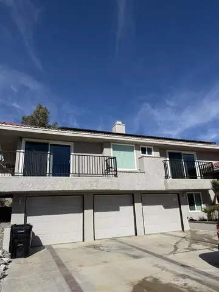

Home/Window Cleaning/Two Story Homes
Serving Hesperia and the High DesertTwo Story Window Cleaning
$249 for the outside of a two story home, 18 to 20 windows, screens, tracks and sills included. No ladders leaning on your stucco.
Upstairs windows are the ones that never get done, because nobody wants to stand on a ladder over a rock yard. We clean them from the ground with a water fed pole and purified water, the same way the panels get washed, and the upstairs glass comes out as clean as the downstairs.
Read our Google reviews · Free inspection · Satisfaction guaranteed
Interested in seeing window cleaning we've done?
Photos from our own jobs, with the town on each one we know. Tap one to see it bigger.
 Hesperia · Tony on the squeegee
Hesperia · Tony on the squeegee Apple Valley · Second story, water fed pole
Apple Valley · Second story, water fed pole Apple Valley · Corner picture window
Apple Valley · Corner picture window
Apple Valley · Front window
Apple Valley · Two story, balconies Victorville · Upstairs windows
Victorville · Upstairs windows


Like what you see? Request your service below.
Tell Tony what your property needs
Choose one or more services and a preferred day. Tony confirms the scope, final price and appointment personally. No payment is taken here.
Upstairs glass without a ladder
Water fed pole
A carbon fiber pole with a soft brush on the end reaches second story glass from the ground. Purified water is pumped up through it, the brush scrubs, and the rinse dries spot free because there is nothing in the water to leave a spot.
Purified water
Tap water dries into mineral spots, which is why hosing windows never works. Deionized water carries nothing, so the glass dries clear with no squeegee and no wiping needed up high.
Screens and tracks
Upstairs screens come out from the inside, get scrubbed and go back. Tracks and sills on the ground floor are wiped out, and the upstairs sills are rinsed clean.
What ladders do to a two story home
A ladder on stucco leaves two scuffs where it rests and sometimes a crack. On rock yards it walks, on slopes it tips, and on a windy Hesperia afternoon it is dangerous for the person on it. The pole does the same window from the ground in less time and touches nothing but the glass.
Where a pole cannot reach, a bay window over a garage roof for example, we work from the roof deck or bring a ladder with standoffs that keep it off the wall. That is rare on tract homes and we tell you ahead of time if yours needs it.
What $249 includes and what it does not
$249 covers the outside of a two story home with 18 to 20 windows: glass, screens, tracks and sills. Past 20 windows it is a flat $39 more, one price no matter how many. Inside every window is $49 more, same visit, tracks vacuumed and wiped dry.
A big custom two story, the kind with a two story entry and 30 windows across the back, is priced after a look and usually runs $499 to $599 inside and out. Tony confirms the number in writing before anything starts. Book on our website and the first visit is 10% off.
How often a two story needs it
Upstairs glass gets less sprinkler overspray but more wind blown dust, and nobody notices it from inside until the sun hits it. Twice a year keeps it clear, and on a plan that is 15% off each visit after the first. Every 3 months is 25% off and is what homes on the open desert edge tend to pick.
Two story window cleaning questions
How much does two story window cleaning cost?
$249 for the outside of a two story home with 18 to 20 windows, screens, tracks and sills included. More than 20 windows is a flat $39 more. Inside every window is $49 more on the same visit.
Do you use ladders on a two story?
Almost never. Second story glass is cleaned from the ground with a water fed pole and purified water, which leaves nothing on your stucco and nothing to spot. Where a pole cannot reach we work from a roof deck or use standoffs that keep the ladder off the wall.
How do the upstairs screens get cleaned?
They come out from inside, get scrubbed and rinsed, and go back in. If you would rather we not come inside, the screens can be passed out and back through the window.
Do you clean the upstairs tracks?
Sills upstairs are rinsed clean from the pole. Tracks are wiped out wherever we can reach them from inside, which is part of the inside windows add on at $49.
What about a large custom two story?
Homes with two story entries and 25 to 30 plus windows are priced after a look, usually $499 to $599 inside and out. The number is confirmed in writing before we start and it does not change on the day.